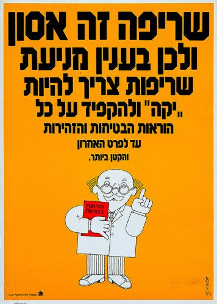
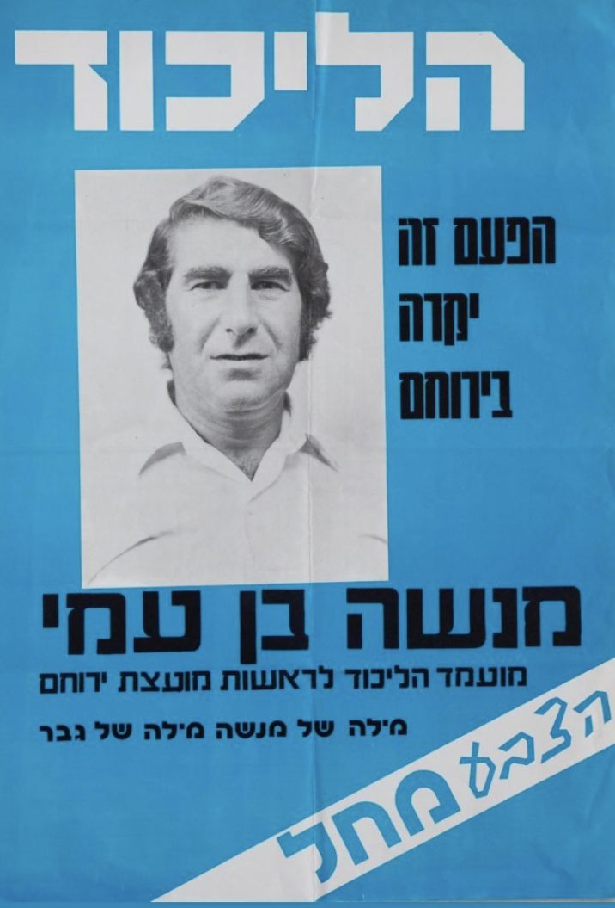
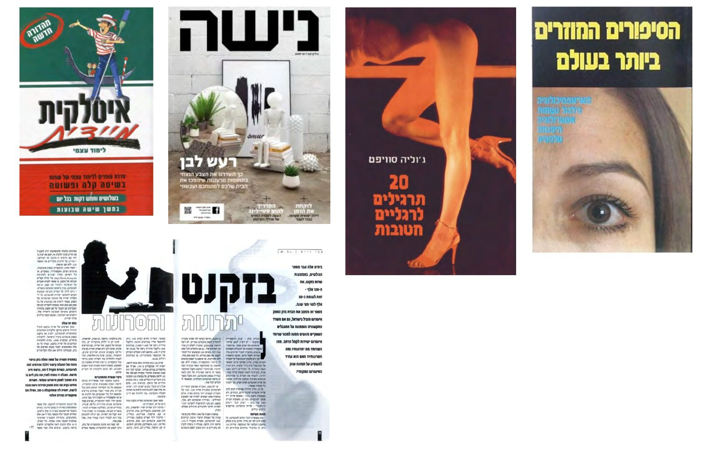
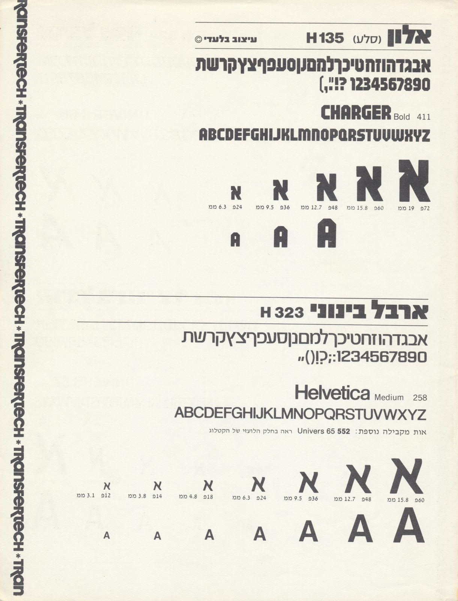
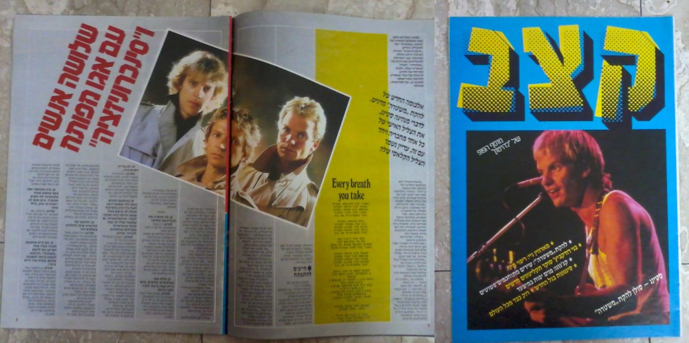
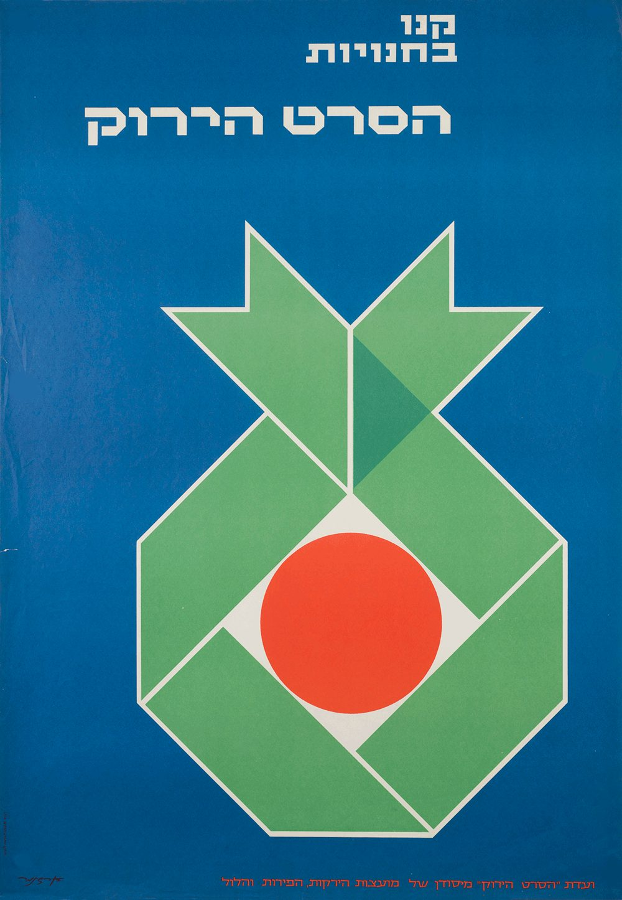
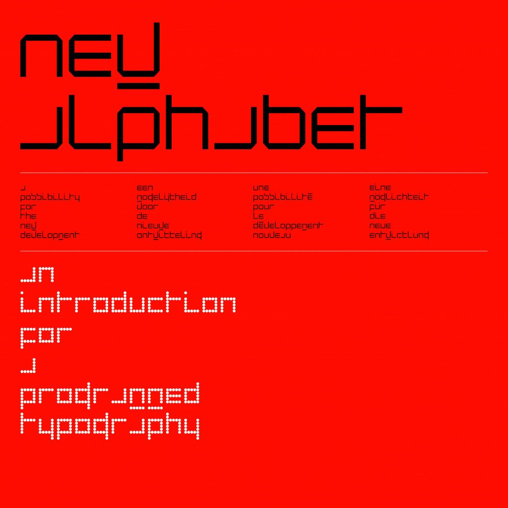
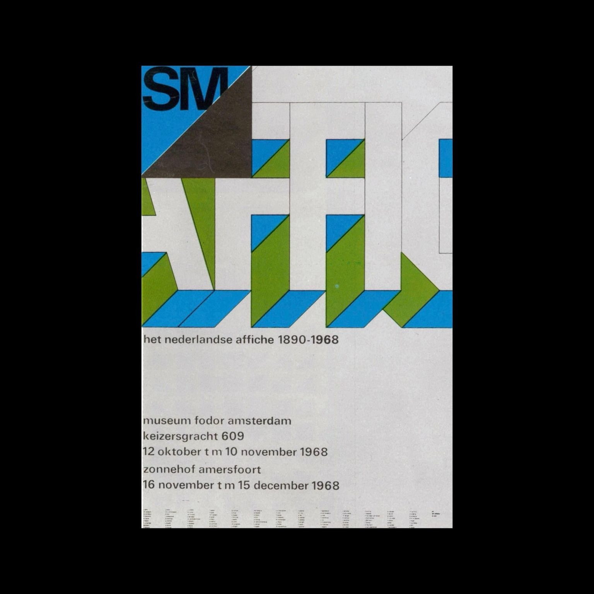
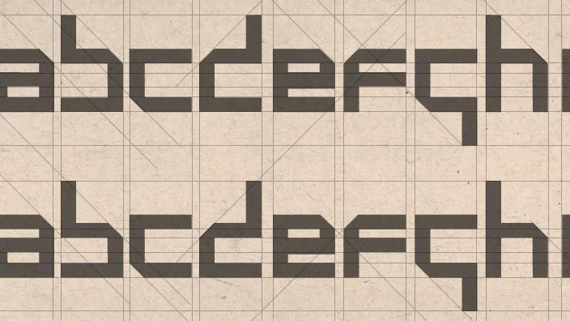

דולומיט
[Dolomit]

Dolomit is a geometric display typeface, drawn with several sources in mind.
The first is Haim, the canonical Hebrew letter that is still one of the most common headline faces in the language. Haim was drawn in the early twentieth century in Eastern Europe, under the influence of the Bauhaus, and it carried a new modernist spirit into the Hebrew letter. Nobody knows for certain who designed it. Some credit the Polish designer Jan Leświt, others the Hungarian designer Pesach Ir-Shai. It was met with a good deal of criticism among letter designers at first, while part of the art community encouraged its use. The poet Hayim Nahman Bialik went as far as writing to Pesach Ir-Shai to encourage him to carry on with the letter, and so the designer named it after the poet.

For all the argument around it, there is no arguing with how present Haim is in Hebrew, or how widely and variously it has been used. Dolomit was drawn as a modern answer to it. It stays faithful to its sans serif, geometric, constructivist character, and brings a different approach to the letter.


A second source is the typeface Alon, known in its modern name as Sela Atzil, drawn for a Letraset catalogue by the type designer Shmuel Sela. Sela has been designing Hebrew typefaces since 1977, with original designs produced as fonts for dry transfer sheets, typewriters, phototypesetting systems and personal computers. His geometric letter is marked by geometric curves at the terminals, drawn from the American Collegiate and Varsity lettering styles, which give it weight and presence. It was used widely through the eighties and nineties, and disappeared from the Israeli landscape along with Letraset itself. Dolomit is a modern variation on it, with sharper curves at the terminals, taken from folded paper, which give the letter a more modern feel.



A third source is the Dutch designer Wim Crouwel, one of the fathers of the modernist letter. Dolomit draws directly on his experimental New Alphabet, and above all on the sharp curves at the terminals, which give the letter something futuristic.



Dolomit covers the full Hebrew alphabet, including alternates as OpenType features, which allow a different variation for almost every letter. It also includes Latin capitals, drawn on the Hebrew letters.


Dolomit was designed by Liad Shadmi, with typographic consultation by Ben Nathan.